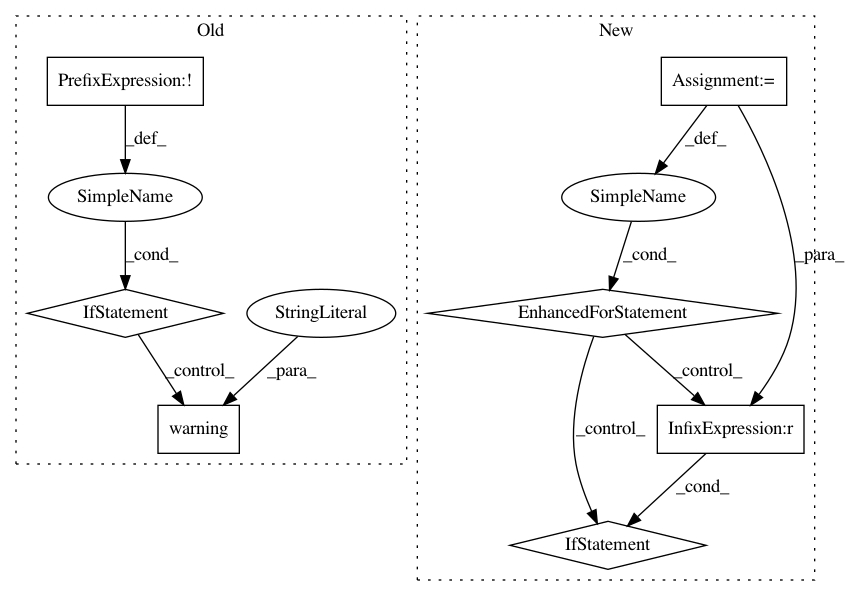

ebd339fe6f290551bf9424a06ee8c44c43b6d69c,src/pudl/extract/ferc714.py,,get_ferc714,#Any#,47
Before Change
ferc714_dir = pathlib.Path(pudl_settings["data_dir"]) / "local/ferc714/"
ferc714_dir.mkdir(parents=True, exist_ok=True)
ferc714_zipfile = ferc714_dir / "ferc714.zip"
if not ferc714_zipfile.is_file():
logger.warning("Downloading a fresh copy of the FERC 714 data (~50MB).")
pudl.helpers.download_zip_url(ferc714_url, ferc714_zipfile)
return ferc714_zipfile
def _get_zpath(ferc714_table, pudl_settings):
After Change
sandbox=sandbox)
resources = ds.get_resources("ferc714")
for r in resources:
if r["name"] == "form714.zip":
return Path(r["path"])
def _get_zpath(ferc714_table, pudl_settings):
Given a table name and pudl_settings, return a Path to the corresponding file.
In pattern: SUPERPATTERN
Frequency: 3
Non-data size: 7
Instances
Project Name: catalyst-cooperative/pudl
Commit Name: ebd339fe6f290551bf9424a06ee8c44c43b6d69c
Time: 2020-08-21
Author: mailbox@pablovirgo.com
File Name: src/pudl/extract/ferc714.py
Class Name:
Method Name: get_ferc714
Project Name: tensorflow/magenta
Commit Name: 35377d296d2b483a848758ded381cd50f26e98fd
Time: 2018-05-01
Author: iansimon@users.noreply.github.com
File Name: magenta/models/performance_rnn/performance_rnn_generate.py
Class Name:
Method Name: run_with_flags
Project Name: Microsoft/nni
Commit Name: 2de52a8976971da4836727ba9242fedcc7474878
Time: 2020-01-16
Author: 656569648@qq.com
File Name: src/sdk/pynni/nni/compression/torch/compressor.py
Class Name: Pruner
Method Name: export_model